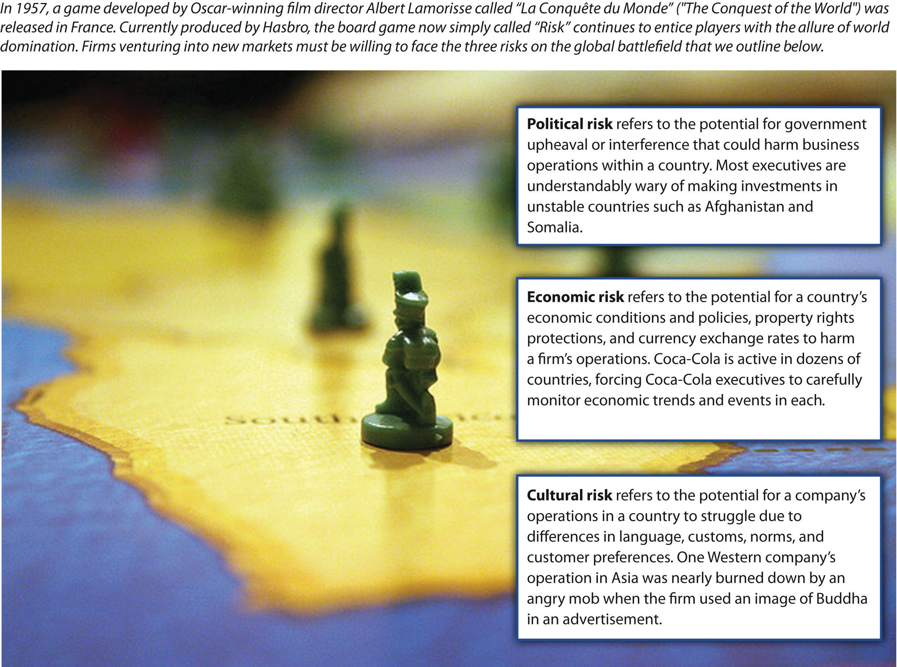

As Kia’s experience illustrates, international business is a huge segment of the world’s economic activity. Amazingly, current projections suggest that, within a few years, the total dollar value of trade across national borders will be greater than the total dollar value of trade within all of the world’s countries combined. One driver of the rapid growth of internal business over the past two decades has been the opening up of large economies such as China and Russia that had been mostly closed off to outside investors.
The United States enjoys the world’s largest economy. As an illustration of the power of the American economy, consider that, as of early 2011, the economy of just one state—California—would be the eighth largest in the world if it were a country, ranking between Italy and Brazil.Stateside substitutes. 2011, January 2011. The Economist. Retrieved from http://www.economist.com/blogs/dailychart/2011/01/comparing_us_states_ countries The size of the US economy has led American commerce to be very much intertwined with international markets. In fact, it is fair to say that every business is affected by international markets to some degree. Tiny businesses such as individual convenience stores and clothing boutiques sell products that are imported from abroad. Meanwhile, corporate goliaths such as General Motors (GM), Coca-Cola, and Microsoft conduct a great volume of business overseas.
Perhaps the most obvious reason to compete in international markets is gaining access to new customers. Although the United States enjoys the largest economy in the world, it accounts for only about 5 percent of the world’s population. Selling goods and services to the other 95 percent of people on the planet can be very appealing, especially for companies whose industry within their home market are saturated (Figure 7.1 "Why Compete in New Markets?").
Few companies have a stronger “All-American” identity than McDonald’s. Yet McDonald’s is increasingly reliant on sales outside the United States. In 2006, the United States accounted for 34 percent of McDonald’s revenue, while Europe accounted for 32 percent and 14 percent was generated across Asia, the Middle East, and Africa. By 2011, Europe was McDonald’s biggest source of revenue (40 percent), the US share had fallen to 32 percent, and the collective contribution of Asia, the Middle East, and Africa had jumped to 23 percent. With less than one-third of its sales being generated in its home country, McDonald’s is truly a global powerhouse.
Levi’s jeans are appreciated by customers worldwide, as shown by this balloon featured at the Putrajaya International Hot Air Balloon Fiesta.
Image courtesy of Kevin Poh, http://www.flickr.com/photos/kevinpoh/4446228896.
China and India are increasingly attractive markets to US firms. The countries are the two most populous in the world. Both nations have growing middle classes, which means that more and more people are able to purchase goods and services that are not merely necessities of life. This trend has created tremendous opportunities for some firms. In the first half of 2010, for example, GM sold more vehicles in China than it sold in the United States (1.2 million vs. 1.08 million). This gap seemed likely to expand; in the first half of 2010, GM’s sales in China increased nearly 50 percent relative to 2009 levels, while sales in the United States rose 15 percent.Isidore, C. 2010. July 2. GM’s Chinese sales top US. CNNMoney. Retrieved from http://money.cnn.com/2010/07/02/news/companies/gm_china/index.htm
Many firms that compete in international markets hope to gain cost advantages. If a firm can increase it sales volume by entering a new country, for example, it may attain economies of scale that lower its production costs. Going international also has implications for dealing with suppliers. The growth that overseas expansion creates leads many businesses to purchase supplies in greater numbers. This can provide a firm with stronger leverage when negotiating prices with its suppliers.
OffshoringThe relocation of a business activity to another country. has become a popular yet controversial means for trying to reduce costs. Offshoring involves relocating a business activity to another country. Many American companies have closed down operations at home in favor of creating new operations in countries such as China and India that offer cheaper labor. While offshoring can reduce a firm’s costs of doing business, the job losses in the firm’s home country can devastate local communities. For example, West Point, Georgia, lost approximately 16,000 jobs in the 1990s and 2000s as local textile factories were shut down in favor of offshoring.Copeland, L. 2010, March 25. Kia breathes life into old Georgia textile mill town. USA Today. Retrieved from http://www.usatoday.com/news/nation/2010-03-24-boomtown_N.htm Fortunately for the town, Kia’s decision to locate its first US factory in West Point has improved the economy in the past few years. In another example, Fortune Brands saved $45 million a year by relocating several factories to Mexico, but the employee count in just one of the affected US plants dropped from 1,160 to 350.
A growing number of US companies are finding that offshoring is not providing the benefits they had expected. This has led to a new phenomenon known as reshoringThe relocation to a firm’s home country of business activity that had been sent overseas., whereby jobs that had been sent overseas are returning home. In some cases, the quality provided by workers overseas is not good enough. Carbonite, a seller of computer backup services, found that its call center in Boston was providing much strong customer satisfaction than its call center in India. The Boston operation’s higher rating was attained even though it handled the more challenging customer complaints. As a result, Carbonite plans to shift 250 call center jobs back to the United States by the end of 2012.
In other cases, the expected cost savings have not materialized. NCR had been making ATMs and self-service checkout systems in China, Hungary, and Brazil. These machines can weigh more than a ton, and NCR found that shipping them from overseas plants back to the United States was extremely expensive. NCR hired 500 workers to start making the ATMs and checkout systems at a plant in Columbus, Georgia. NCR’s plans call for 370 more jobs to be added at the plant by 2014. Similarly, General Electric announced plans to hire approximately 1,300 workers in Louisville, Kentucky, starting in the fall of 2011. These workers will make water heaters and refrigerators that had been produced overseas.Isidore, C. 2011, June 17. Made in USA: Overseas jobs come home. CNNMoney. Retrieved from http://money.cnn.com/2011/06/17/news/economy/made_in_usa/index.htm
A familiar cliché warns “don’t put all of your eggs in one basket.” Applied to business, this cliché suggests that it is dangerous for a firm to operate in only one country. Business riskThe potential that a business operation might fail. refers to the potential that an operation might fail. If a firm is completely dependent on one country, negative events in that country could ruin the firm. Just like spreading one’s eggs into multiple baskets reduces the chances that all eggs will be broken, business risk is reduced when a firm is involved in multiple countries.
Firms can reduce business risk by competing in a variety of international markets. For example, the ampm convenience store chain has locations in the United States, Mexico, Brazil, and Japan.
Image courtesy of MASA, http://upload.wikimedia.org/wikipedia/commons/d/db/Ampm.JPG.
Consider, for example, natural disasters such as the earthquakes and tsunami that hit Japan in 2011. If Japanese automakers such as Toyota, Nissan, and Honda sold cars only in their home country, the financial consequences could have been grave. Because these firms operate in many countries, however, they were protected from being ruined by events in Japan. In other words, these firms diversified their business risk by not being overly dependent on their Japanese operations.
American cigarette companies such as Philip Morris and R. J. Reynolds are challenged by trends within the United States and Europe. Tobacco use in these areas is declining as more laws are passed that ban smoking in public areas and in restaurants. In response, cigarette makers are attempting to increase their operations within countries where smoking remains popular to remain profitable over time.
In 2006, for example, Philip Morris spent $5.2 billion to purchase a controlling interest in Indonesian cigarette maker Sampoerna. This was the biggest acquisition ever in Indonesia by a foreign company. Tapping into Indonesia’s population of approximately 230 million people was attractive to Philip Morris in part because nearly two-thirds of men are smokers, and smoking among women is on the rise. As of 2007, Indonesia was the fifth-largest tobacco market in the world, trailing only China, the United States, Russia, and Japan. To appeal to local preferences for cigarettes flavored with cloves, Philip Morris introduced a variety of its signature Marlboro brand called Marlboro Mix 9 that includes cloves in its formulation.T2M. 2007, July 3. Clove-flavored Marlboro now in Indonesia [Web blog post]. Retrieved from http://www.the-two-malcontents.com/2007/07/clove-flavored-marlboro- now-in-indonesia
Trends in the decline of cigarette use in the United States and Europe may snuff out profits enjoyed by brands such as Marlboro.
Image courtesy of Autodesigner, http://en.wikipedia.org/wiki/File:Marlboroultralights.JPG.
Figure 7.2 Entering New Markets: Worth the Risk?
Image courtesy of The Fayj, http://www.flickr.com/photos/fayjo/333325967/
Although competing in international markets offers important potential benefits, such as access to new customers, the opportunity to lower costs, and the diversification of business risk, going overseas also poses daunting challenges. Political riskThe potential for government upheaval or interference with business to harm an operation within a country. refers to the potential for government upheaval or interference with business to harm an operation within a country (Figure 7.2 "Entering New Markets: Worth the Risk?"). For example, the term “Arab Spring” has been used to refer to a series of uprisings in 2011 within countries such as Tunisia, Egypt, Libya, Bahrain, Syria, and Yemen. Unstable governments associated with such demonstrations and uprisings make it difficult for firms to plan for the future. Over time, a government could become increasingly hostile to foreign businesses by imposing new taxes and new regulations. In extreme cases, a firm’s assets in a country are seized by the national government. This process is called nationalizationThe seizure of privately owned business operations by a national government.. In recent years, for example, Venezuela has nationalized foreign-controlled operations in the oil, cement, steel, and glass industries.
Countries with the highest levels of political risk tend to be those such as Somalia, Sudan, and Afghanistan whose governments are so unstable that few foreign companies are willing to enter them. High levels of political risk are also present, however, in several of the world’s important emerging economies, including India, the Philippines, Russia, and Indonesia. This creates a dilemma for firms in that these risky settings also offer enormous growth opportunities. Firms can choose to concentrate their efforts in countries such as Canada, Australia, South Korea, and Japan that have very low levels of political risk, but opportunities in such settings are often more modest.Kostigen, T. 2011, February 25. Beware: The world’s riskiest countries. Market Watch. Wall Street Journal. Retrieved from http://www.marketwatch.com/story/beware-the -worlds-riskiest-countries-2011-02-25
Economic riskThe potential for a country’s economic conditions and policies, property rights protections, and currency exchange rates to harm an operation. refers to the potential for a country’s economic conditions and policies, property rights protections, and currency exchange rates to harm a firm’s operations within a country. Executives who lead companies that do business in many different countries have to take stock of these various dimensions and try to anticipate how the dimensions will affect their companies. Because economies are unpredictable, economic risk presents executives with tremendous challenges.
Consider, for example, Kia’s operations in Europe. In May 2009, Kia reported increased sales in ten European countries relative to May 2008. The firm enjoyed a 62 percent year-to-year increase in Slovakia, 58 percent in Austria, 50 percent in Gibraltar, 49 percent in Sweden, 43 percent in Poland, 24 percent in Germany, 21 percent in the United Kingdom, 13 percent in the Czech Republic, 6 percent in Belgium, and 3 percent in Italy.Kia sales climb strongly in 10 countries in May [Press release]. Kia website. Retrieved from http://www.kia-press.com/press/corporate/20090605-kia%20sales%20 climb%20strongly%20in%2010%20countries.aspx As Kia’s executives planned for the future, they needed to wonder how economic conditions would influence Kia’s future performance in Europe. If inflation and interest rates were to increase in a particular country, this would make it more difficult for consumers to purchase new Kias. If currency exchange rates were to change such that the euro became weaker relative to the South Korean won, this would make a Kia more expensive for European buyers.
Cultural riskThe potential for a company’s operations in a country to struggle because of differences in language, customs, norms, and customer preferences. refers to the potential for a company’s operations in a country to struggle because of differences in language, customs, norms, and customer preferences (Figure 7.3 "Cultural Risk: When in Rome"). The history of business is full of colorful examples of cultural differences undermining companies. For example, a laundry detergent company was surprised by its poor sales in the Middle East. Executives believed that their product was being skillfully promoted using print advertisements that showed dirty clothing on the left, a box of detergent in the middle, and clean clothing on the right.
A simple and effective message, right? Not exactly. Unlike English and other Western languages, the languages used in the Middle East, such as Hebrew and Arabic, involve reading from right to left. To consumers, the implication of the detergent ads was that the product could be used to take clean clothes and make the dirty. Not surprisingly, few boxes of the detergent were sold before this cultural blunder was discovered.
A refrigerator manufacturer experienced poor sales in the Middle East because of another cultural difference. The firm used a photo of an open refrigerator in its prints ads to demonstrate the large amount of storage offered by the appliance. Unfortunately, the photo prominently featured pork, a type of meat that is not eaten by the Jews and Muslims who make up most of the area’s population.Ricks, D. A. 1993. Blunders in international business. Cambridge, MA: Blackwell. To get a sense of consumers’ reactions, imagine if you saw a refrigerator ad that showed meat from a horse or a dog. You would likely be disgusted. In some parts of world, however, horse and dog meat are accepted parts of diets. Firms must take cultural differences such as these into account when competing in international markets.
Cultural differences can cause problems even when the cultures involved are very similar and share the same language. RecycleBank is an American firm that specializes in creating programs that reward people for recycling, similar to airlines’ frequent-flyer programs. In 2009, RecycleBank expanded its operations into the United Kingdom. Executives at RecycleBank became offended when the British press referred to RecycleBank’s rewards program as a “scheme.” Their concern was unwarranted, however. The word scheme implies sneakiness when used in the United States, but a scheme simply means a service in the United Kingdom.Maltby, E. 2010, January 19. Expanding abroad? Avoid cultural gaffes. Wall Street Journal. Retrieved from http://online.wsj.com/article/SB100014240527487036 57604575005511903147960.html Differences in the meaning of English words between the United States and the United Kingdom are also vexing to American men named Randy, who wonder why Brits giggle at the mention of their name (Figure 7.4 "Watch Your Language").